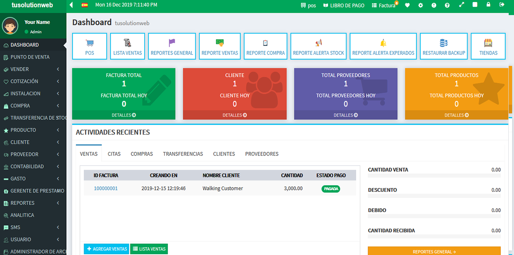
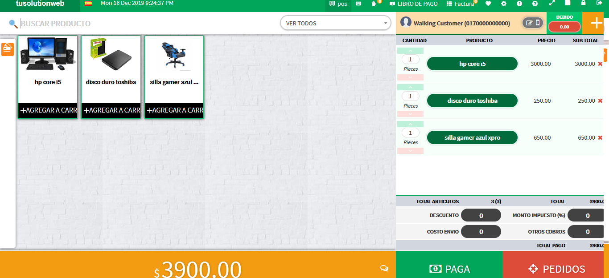
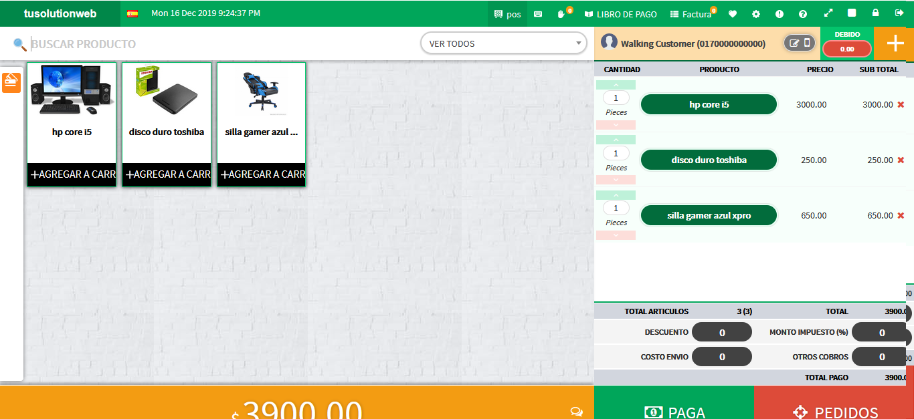

POS Moderno -punto de venta y administracion de stock
GRACIAS POR SU COMPRA
PRIMERO TIENES CREAR TU BASE DE DATOS EN TU SERVIDOR DE BASE DE DATOS phpmyadmin crea la bd con el nombre que prefieras
Una vez creada la bd Importar la base de datos de la carpeta base de datos
► Antes de ese recuerda que tienes que copiar el sistema a tu servidor
Instalacion
Pre-Requirimientos
- conneccion Internet(Obligatoria)
- Una vez que tengas tus base de datos y sepas tu usuario mysql y contraseña mysql: estos son los datos que vamos a utilizar para configurar
- abre el archivo config.php configura el sub directorio del sistema porjemplo ahora esta en http://localhost/pos_moderno entonces va asi
define('SUBDIRECTORY', 'pos_moderno'); - ahora configurar tus datos de coneccion creados
$sql_details = array( 'host' => 'localhost', 'db' => 'NOMBRE_DE_BASE_DAOTOS', 'user' => 'USUARIO_MYSQL_POR_DEFAULT_root', 'pass' => 'PASSWORD_MYSQL_DEFAULT_VACIO' ); - ahora configurar la direccion url de las imagenes del sirva ,ejemplo si tu sistema esta en http://localhost.org/pos_moderno
define('FILEMANAGERURL', 'http://localhost/pos_moderno/storage/products'); );
aca les dejo links para que descarguen servidores locales para el sistema
Instale un software de acuerdo con su sistema operativo
Instalacion de WAMP para Windows
- Descarga e instale el software WAMP en su computadora
- Vaya a c: unidad> carpeta WAMP> carpeta www> pegar carpeta pos_moderno (esto lo obtendrá en nuestro paquete).
- Ejecute el software WAMP
Instale de XAMPP para Windows
- Descarga y instalar Software XAMPP en tu computadora
- Vaya a c: unidad> carpeta XAMPP> carpeta htdocs> pegue la carpeta pos_moderno (esto lo obtendrá en nuestro paquete).
- Ejecute el software XAMPP e inicie Apache y MySQL desde el panel de control XAMPP
Instalación de MAMP para MAC
- Ve a la link y descargue MAMP. Una vez que finalice la descarga, abra el archivo descargado. Arrastre y suelte el archivo de imagen en su carpeta de aplicaciones.
- Pegue la carpeta pos_moderno (esto lo obtendrá en nuestro paquete) su carpeta raíz de documentos MAMP
- Ejecute MAMP
Instalación de LAMP para Linux
- https://sourceforge.net/directory/?q=lamp%20server
- Go to the link y descargue LAMP. Una vez que la descarga haya terminado, instálala.
- Pegue la carpeta pos_moderno (esto lo obtendrá en nuestro paquete) su carpeta raíz de documentos LAMP
- Ejecute LAMP
Important:si desea instalar esta aplicación dentro de una carpeta / directorio personalizado, vaya al archivo config.php en la línea número 61 y cambie el valor de la constante SUBDIRECTORY con su nombre de carpeta / directorio personalizado.
Teste es el Tablero informativo, desde aquí podrás hacer muchos trabajos muy fácilmente
Dashboard
Punto de venta
Venta de producto al cliente
- Dashboard > ir al punto de venta desde el menú vertical o el menú de la barra superior.
- Despues de visitar el punto de venta, seleccione primero el cliente
- Luego haga clic en el producto desde la ventana de la lista de productos (haga clic muchas veces, si desea agregar más productos)
- Puede usar el escáner de código de barras (un escáner de código de barras prueba el tipo de código de barras [CÓDIGO-128, CÓDIGO-93 Y CÓDIGO-39]). Después de completar un escaneo, se agregará un (1) producto.
- Puede escanear varias veces para agregar más cantidad del mismo producto
- Puede otorgar diferentes cantidades de descuento para los diferentes usuarios.
- Puedes dar TAX manualmente.
- Después de seleccionar el producto, el descuento y los impuestos, haga clic en el botón Pagar ahora
- Entonces podrá ver la vista previa de la factura. Luego complete el monto recibido y presione Enter.
- O haga clic en un método de pago que utilizará para obtener la factura del cliente.
- Producto vendido con éxito
- Se generará una factura y podrá imprimir facilmente.
- Podra usar la impresora POS
- Panel izquierdo
- Panel derecho


Ventas
Lista de venta (lista de facturas)
En esta sección, podrá ver todas las facturas en su tienda actual. Además, si desea ver la factura de otro día, puede verla fácilmente filtrando la lista de facturas. Para filtrar la fecha, haga clic en el icono de búsqueda en la barra de menú superior
- Aquí podrá ver la lista de facturas en su tienda actual.
- Podrá ver los detalles de la factura desde aquí
- Podrá devolver el producto de la factura de venta
- Podrá eliminar la factura desde aquí
- Puede imprimir la factura a través de la impresora POS.
Lista de devoluciones
- Aquí obtendrá la lista de devolución de facturas.
- Nombre del producto devuelto con cantidad devuelta.
Registro de venta
- Aquí obtendrá todo el registro de la factura de venta.
- Nombre del producto devuelto con cantidad devuelta.
Tarjeta de regalo
Podrá emitir una Tarjeta de regalo a su cliente, el cliente puede usar esa Tarjeta de regalo para el pago. También puede recargar la tarjeta de regalo del cliente.
Ventaja de la tarjeta de regalo
- El cliente puede usar esta tarjeta de regalo como una tarjeta de efectivo.
- El cliente puede recargar su tarjeta desde su tienda
- El vendedor puede mantener fácilmente.
Agregar nueva tarjeta de regalo
- Panel de control> Tarjeta de regalo> Lista de tarjetas de regalo> Haga clic en Agregar nueva tarjeta de regalo
- El número de tarjeta se generará automáticamente, también puede cambiar el número de tarjeta haciendo clic en el icono de edición.
- Indique el valor de la tarjeta (esto indica cuánto cobra al cliente por esta tarjeta)
- Proporcione la cantidad que desea recargar de esta tarjeta.
Lista de tarjetas de regalo
- Panel de control> Tarjeta de regalo> Lista de tarjetas de regalo> Aquí está la lista de todas las tarjetas de regalo que emitió
- Para ver o imprimir la Tarjeta de regalo, haga clic en el botón Ver de la lista
- Para recargar el dinero en la tarjeta de regalo, haga clic en el botón de recargar e indique el monto y la fecha de vencimiento
- También puede editar y eliminar cualquier Tarjeta de regalo de la lista.
cotizacion
En esta sección, podrá crear una factura de presupuesto para presentar una propuesta a cualquier cliente o instituto
Añadir cotizacion
- Ir al Panel de control> Cita> Agregar cita
- Aquí obtendrá de. complete el formulario con todos los campos obligatorios
- Seleccione el cliente y seleccione la lista de proveedores para obtener ese producto de proveedor fácilmente.
- Escriba el nombre de su producto en la sección Agregar producto. Puedes agregar múltiples productos
- Haga clic en enviar. Se creará una factura de presupuesto.
Lista de cotizaciones
- Al hacer clic en el botón de acción puede editar la factura de presupuesto.
- Desde la lista de facturas de cotización puede ver la factura de cotización e imprimir esa factura.
- En la próxima vez podrá convertir esta factura de presupuesto para vender la factura desde el botón de acción.
Plazo (EMI)
Desde aquí puede administrar su factura a plazos. Puede vender un pago a plazos desde la pantalla POS haciendo clic en el botón vender con pago a plazos.
Crear una factura como pago a plazos
- Goto Dashboard> Punto de venta> Seleccione el producto> Haga clic en el botón Pagar ahora.
- Obtendrá una venta con el botón de pago a plazos debajo del botón FULL PAGADO o FULL DUE.
- Después de hacer clic, aparecerá un formulario sobre el período de pago.
- Duración: Esto indica cuántos días le dará a su cliente para pagar esta cantidad
- Intervalo: cuál es el intervalo entre el primer pago y el segundo o el tercero para formar.
- Plazo total: se calculará automáticamente.
- Cantidad de interés: si tiene alguna cantidad de interés, indique el valor porcentual. Puede usar cero (0).
Recibir pago a plazos
- Puede recibir el vencimiento de la lista de plazos
- Vaya al Panel de control> Plazos> Lista de plazos> Aquí obtendrá toda la lista de plazos de venta.
- Haga clic en el botón de vista de una factura. Aquí obtendrá una lista de plazos
- Haga clic en el botón Pago y proporcione el monto recibido.
Lista de plazos
- Obtendrá todas las facturas a plazos en esta sección.
- Vaya al Panel de control> Plazos> Lista de plazos> Aquí obtendrá toda la lista de plazos de venta.
- Haga clic en el botón de vista de una factura. Aquí obtendrá los detalles de la entrega
- Aquí obtendrá el monto adeudado y la cuota restante y su fecha de pago.
- Cuando se paga la factura a plazos, el estado se pagará en la lista de facturas a plazos.
Pago de instalación
- Obtendrá todos los pagos a plazos en esta sección.
- Vaya al Panel de control> Plazos> Lista de pagos> Aquí obtendrá todo el pago de la venta a plazos.
Otra función de pago
- Pago pendiente hoy: aquí obtendrá la lista que recibió de la cuota vencida.
- Pago adeudado a todos: Aquí recibirá todas las facturas a plazos vencidas.
- Vencimiento del pago vencido: Aquí recibirá todas las facturas de pago vencidas que no hayan cumplido su fecha de pago.
Informe general
- Obtendrá un cálculo general de la cuota, es decir, factura total, monto de interés, monto recibido y monto adeudado
Compra
In this section you will be to able to see lot of information about purchase product(that you were bought from supplier).
Lista de compras
- Panel de control> Compra> Lista de compras> Aquí obtendrá toda la lista de su compra del proveedor.
- Para devolver el producto al proveedor, haga clic en el botón de devolución de esa factura de la lista
- Podrá pagar lo debido a su proveedor desde el botón de pago.
- Para obtener la factura de otro día, debe hacer clic en el icono de búsqueda de la barra superior.
Facturas vencidas
- Panel de control> Compra> Facturas vencidas> Aquí obtendrá toda la lista de su compra del proveedor que ha vencido.
- También puede pagar desde esta lista haciendo clic en el botón pagar.
Añadir compras
- Panel de control> Compra> Agregar compras> Aquí podrá comprar productos de cualquier proveedor
- Primero debe seleccionar el proveedor y proporcionar el ID de la factura.
- Busque el producto y seleccione de la lista y proporcione la cantidad de compra del producto
- Luego proporcione el precio de compra del producto y el precio de venta
- Indique el monto pagado (puede cobrarlo al proveedor)
- Haga clic en el botón Comprar ahora
Lista de transacciones
- Panel de control> Compra> Lista de transacciones> Aquí podrá realizar todas las transacciones con todos sus proveedores
- Para obtener la lista de transacciones de otro día, debe filtrar desde la barra superior haciendo clic en el icono de búsqueda
Transferencia de stock
En esta sección, podrá transferir productos de una tienda a otra.
Agregar transferencia
- Ir al Panel de control> Transferencia de stock> Agregar transferencia
- Aquí obtendrá de. complete el formulario con todos los campos obligatorios
- Seleccione la tienda del remitente y la tienda del receptor
- En la sección de la lista de existencias, obtendrá toda la lista de productos de la tienda del remitente.
- Haga clic en el producto de esa lista para transferir el producto
- Después de hacer clic en ese producto, se agregará en la sección Lista de transferencias.
- Haga clic en el botón Transferir ahora para Transferir producto
- Aparecerá un mensaje exitoso si la operación es exitosa.
Lista de transferencia
- Ir al Panel de control> Transferencia de stock> Lista de transferencias
- Aquí podrá ver todas las transferencias desde su tienda
- Aquí puede cambiar el estado de transferencia de cualquier transferencia desde su tienda
- Cuando se complete el estado de transferencia, se agregará la cantidad del producto de transferencia de tiempo en la tienda receptora.
Producto
Cada tienda puede organizar un montón de productos que contiene el producto. El software permite crear los productos, así como también puede editar, eliminar su producto de creación.
Crear nuevo producto
Para crear un producto, primero debe crear una caja (ubicación del producto) y un proveedor (que le proporcionará el producto).¿Cómo crear una caja?Cómo crear un proveedor?
- Panel de control> Producto> complete el formulario en "Agregar nuevo producto" con información válida
- Si tiene más tiendas (varias tiendas), puede agregar este producto a todas las tiendas haciendo clic en la tienda en la lista de tiendas desde aquí.
- Después de crear con éxito un nuevo producto se mostrará en la sección "Ver todo el nombre del producto". Aquí la cantidad disponible del producto es Cero (0). La cantidad disponible del producto aumentará cuando compre el producto a un proveedor.
- El precio de compra y el precio de venta serán necesarios cuando compre un producto al proveedor
Comprar producto del proveedor
- Panel> Producto> Todos los productos se mostrarán en "Ver todo el nombre del producto"
- Haga clic en el botón Comprar (símbolo de más) del artículo del producto> aparecerá una ventana modal flotante> complete este formulario proporcionando información válida
- En el área de búsqueda de productos, obtendrá la lista de productos de ese proveedor solo en esta ventana emergente modal.
- Indique la cantidad, el precio de compra y el precio de venta de ese producto
- Después de proporcionar información, haga clic en Comprar.
- Recibirá un informe de la cantidad que compró a un proveedor en el área de informe de compra.
Devolver producto al proveedor
- Panel> Producto> Todos los productos se mostrarán en "Ver todo el nombre del producto"
- Haga clic en el botón Devolución (símbolo con menos) del artículo del producto> aparecerá una ventana modal flotante> proporcione el ID de la factura y la Cantidad (esa cantidad que desea devolver)
- Después de proporcionar información, haga clic en Volver
Actualizar y eliminar un producto
- Panel> Producto> Todos los productos se mostrarán en "Ver todo el nombre del producto"
- Haga clic en el botón editar de un artículo del producto> aparecerá una ventana modal flotante> cambiar información> actualizar
- Haga clic en el botón Eliminar de un elemento del producto> aparecerá una ventana modal flotante> seleccione el método> Eliminar
Generar código de barras
- Panel> Producto> Todos los productos se mostrarán en "Ver todos los productos"
- Haga clic en el botón del icono del código de barras debajo de la etiqueta del código de barras de un artículo del producto> aparecerá una ventana de alerta flotante> seleccione la cantidad y elija el tipo de código de barras (tipo de código de barras CÓDIGO 128, CÓDIGO-39 y CÓDIGO-93 probado por el escáner de código de barras) < / li>
- Haga clic en Imprimir
- Puede usar el escáner de código de barras para seleccionar Producto en la pantalla POS
Importación de producto
- Si necesita agregar muchos productos a su tienda, puede usar este método.
- Necesita descargar el archivo .xls y debe rellenarlo.
- En ese archivo .xls, obtendrá un producto de demostración (que se usa solo para instrucciones)¿Cómo?
- Después de llenar ese archivo .xls, debe cargarlo aquí
- Después de cargar> Haga clic en Importar
Alerta de stock
- Panel> Producto> Alerta de stock
- Qué cantidad de stock de producto es baja, verá esa lista de productos aquí.
- Podrá aumentar la cantidad del producto haciendo clic en la compra del producto (símbolo de más) de la lista de alertas de inventario.
Producto caducado
- Panel> Producto> Caducado
- En esta sección, puede ver la lista de productos caducados
Cliente
Aquí puede administrar a su cliente muy fácilmente. Podrá ver el historial del cliente con todas las facturas.
Crear nuevo cliente
- Panel> Cliente> complete el formulario en "Agregar nuevo cliente" con información válida> guardar
- Después de crear con éxito un nuevo cliente se mostrará en la sección "Lista de clientes".
Ver historial del cliente
- Panel> Cliente> Haga clic en el icono del ojo debajo del botón de vista.
- Podrá ver toda la factura anterior con toda la información.
- De lo contrario, obtendrá información de vencimiento, número de factura de por vida y monto de compra de por vida
Editar y eliminar cliente
- Panel> Cliente> Todos los clientes se mostrarán en "Ver todos los nombres de clientes"
- Haga clic en el botón Editar de un elemento del cliente> aparecerá una ventana modal flotante> Cambiar información> Actualizar.
- Haga clic en el botón Eliminar de un elemento del cliente> aparecerá una ventana modal flotante> Elija un método> Eliminar
Proveedora
Cada tienda puede coordinar con un grupo de Proveedores que contienen el producto. El software permite crear el Proveedor, así como también puede editar, eliminar su proveedor de creación.
Crear nuevo proveedor
- Panel> Proveedor> complete el formulario en "Agregar nuevo proveedor" con información válida> guardar
- Después de crear con éxito un nuevo proveedor se mostrará en la sección "Lista de proveedores"
- De la lista de proveedores podrá comprar productos haciendo clic en el botón comprar.
Historia del proveedor
- Panel> Proveedor> Todos los proveedores se mostrarán en "Lista de proveedores"
- Haga clic en el botón Ver de un proveedor.
- Puede ver toda la factura y más información que compró a ese comprador
- Obtendrá un historial de vida del proveedor.
Editar y eliminar un proveedor
- Panel de control> Proveedor> Todos los proveedores se mostrarán en la "Lista de proveedores"
- Haga clic en el botón editar de un artículo del proveedor> aparecerá una ventana modal flotante> cambie la información y haga clic en el botón Actualizar
- Haga clic en el botón Eliminar de un artículo del proveedor> aparecerá una ventana modal flotante> seleccione un método> eliminar
Contabilidad
Aquí podrá mantener su sistema de contabilidad bancaria. Puede mantener varias cuentas bancarias desde aquí
Depósito
- Panel de control> Contabilidad> Depósito
- Rellene la información
- Haga clic en Depósito
Retirar
- Panel de control> Contabilidad> Retirar
- Rellene la información
- Haga clic en Widthdraw
Fondo de transferencia
Puede transferir a su otra cuenta bancaria.
- Panel de control> Contabilidad> Transferir fondos
- Seleccione la cuenta del remitente y la cuenta del receptor y complete toda la información
- Haga clic en Transferir ahora
Lista de transferencia
Puede ver la lista de transferencias a su otra cuenta bancaria.
- Panel de control> Contabilidad> Lista de transferencias
- Aquí obtendrá toda la lista de transferencias con información detallada
Lista de transacciones
- Panel de control> Contabilidad> Lista de transacciones
- Aquí obtendrá todas las transacciones de la cuenta bancaria en esta lista de transacciones.
Lista de cuentas bancarias
- Panel de control> Contabilidad> Lista de cuentas bancarias
- Aquí obtendrá toda la lista de su cuenta bancaria
- Para agregar una nueva cuenta bancaria, haga clic en Agregar nueva cuenta bancaria y complete toda la información
Fuente de ingresos
- Panel> Contabilidad> Fuente de ingresos
- Aquí puede agregar una fuente de ingresos
- Para agregar una nueva fuente de ingresos, haga clic en "Agregar nueva fuente de ingresos" y complete toda la información
Ingresos mensuales
- Panel de control> Contabilidad> Ingresos mensuales
- Aquí puede ver la cantidad que recibió de diferentes fuentes de ingresos
Ingresos y gastos
- Panel de control> Contabilidad> Ingresos y gastos
- Aquí obtendrá un informe sobre ingresos y gastos
Ganancias y pérdidas
- Panel> Contabilidad> Pérdidas y ganancias
- Aquí obtendrá un informe sobre ganancias y pérdidas, podrá filtrar este informe
Libro de caja
- Panel de control> Contabilidad> Libro de caja
- Necesita ingresar el saldo de apertura de su día actual.
Lista de transacciones
- Panel de control> Contabilidad> Lista de transacciones
- Aquí obtendrá detalles de todas las transacciones como. transacción de venta, transacción de compra, transacción de depósito bancario y transacción de retiro bancario.
Balance general
- Panel de control> Contabilidad> Balance general
- Aquí obtendrá un informe general de sus cuentas bancarias
Gastos
Aquí obtendrá información sobre los gastos de su tienda, como alquiler de la tienda, factura de electricidad, factura de té, etc.
Agregar un gasto
- Panel> Gastos> Agregar gastos
- Complete el formulario proporcionando información válida.
- Guardar
Lista de gastos
- Panel de control> Gastos> Lista de gastos
- Aquí obtendrá toda la lista de gastos en función de su filtrado.
- El informe de gastos se mostrará en el informe final.
Categoría
- Panel de control> Gastos> Categoría
- Aquí puede crear la categoría de gastos.
- La categoría de gastos se mostrará en la sección Agregar nuevo gasto.
Resumen
- Panel de control> Gastos> Resumen
- Aquí obtendrá gastos en suma.
- El gasto se mostrará como una categoría con día, semana, mes y año sabio
Creditos
Aquí puede administrar el préstamo que obtendrá de cualquier banco o cualquier otro instituto para ampliar su negocio.
Tome un préstamo
- Panel> Administrador de préstamos> Tomar préstamo
- Complete el formulario proporcionando información válida.
- Haga clic en GUARDAR para tomar un préstamo
Lista de préstamos
- Panel> Administrador de préstamos> Lista de préstamos
- Aquí obtendrá toda la lista de gastos en función de su filtrado.
- De la lista podrá pagar el monto del préstamo
- Al hacer clic en el botón de vista, obtendrá el historial de pago de préstamos
Resumen del préstamo
- Panel> Administrador de préstamos> Resumen de préstamos
- Aquí obtendrá un informe resumido sobre su préstamo
Informe
Obtendrá muchos informes desde aquí, como Informe general, Informe de venta, Informe de compra, Informe de vencimiento, Informe de pago, Informe de stock (esto lo ayudará a obtener un resumen de mes, mes o año)
Informe general
- Panel> Informes> Informe general
- Obtendrá una información general del informe con beneficios, monto de venta, monto de recaudación de impuestos, monto de descuento y muchas cosas en un día, mes o año (depende de su filtrado)
Informe de recopilación
- Panel> Informes> Informe de recopilación
- Aquí obtendrá el monto de recolección inteligente del personal del cliente
- Puede filtrar cualquier fecha. (icono de filtro presente en la barra de menú superior con el icono de búsqueda)
Informe de cobro pendiente
- Panel> Informes> Informe de cobro vencido
- Aquí obtendrá un informe de cobro debido
- Puede filtrar cualquier fecha. (icono de filtro presente en la barra de menú superior con el icono de búsqueda)
Informe pagado por el proveedor
- Panel de control> Informes> Proveedor vencido pagado
- Aquí obtendrá el informe de pago vencido del proveedor (que pagó)
- Puede filtrar cualquier fecha. (icono de filtro presente en la barra de menú superior con el icono de búsqueda)
Informe de venta
- Panel> Informes> Informe de venta
- Obtendrá una lista de productos con el número de ventas en un día, mes o año (depende de su filtrado)
Informe de compra
- Panel> Informes> Informe de compras
- Recibirá un informe de compra inteligente diario, mensual, anual (según su filtro) (que comprará al proveedor)
Informe de pago de venta
- Panel> Informes> Informe de pago de venta
- Aquí obtendrá un informe de pago de venta (que recibió del cliente)
- Puede filtrar cualquier fecha. (icono de filtro presente en la barra de menú superior con el icono de búsqueda)
Informe de pago de compra
- Panel> Informes> Informe de pago de compra
- Aquí obtendrá un informe de pago de compra (que pagó al proveedor)
- Puede filtrar cualquier fecha. (icono de filtro presente en la barra de menú superior con el icono de búsqueda)
Informe de impuestos de venta
- Panel> Informes> Informe de impuestos de venta
- Aquí obtendrá un informe de impuestos sobre la venta (que está recogiendo del cliente)
- Puede filtrar cualquier fecha. (icono de filtro presente en la barra de menú superior con el icono de búsqueda)
Informe de impuestos de compra
- Panel de control> Informes> Informe de impuestos de compra
- Aquí obtendrá el informe de impuestos de compra (le pagaron a su proveedor)
- Puede filtrar cualquier fecha. (icono de filtro presente en la barra de menú superior con el icono de búsqueda)
Informe general de impuestos
- Panel> Informes> Informe de resumen de impuestos
- Aquí obtendrá el informe de impuestos de compra (le pagaron a su proveedor)
- Puede filtrar cualquier fecha. (icono de filtro presente en la barra de menú superior con el icono de búsqueda)
Informe de existencias
- Panel> Informes> Informe de stock
- Obtendrá el informe de Stock (ese producto reservado en su tienda)
- Obtendrá la cantidad del producto con el proveedor
- Puede calcular el número total de productos en su tienda
Analítica
Puede ver un análisis general de su tienda
- Panel de control> Análisis
- Aquí obtendrá el beneficio de hoy, el producto principal semanal, mensual y anual, y el mejor cliente y muchas cosas.
- Obtendrá un gráfico sobre sus ingresos y gastos en el mes actual
- Puede obtener mucha información al ver este gráfico

SMS
Puede enviar SMS a su cliente después de crear una factura (automática o manualmente) y también podrá enviar SMS a otra persona
Enviar SMS
- Panel> Enviar SMS
- Aquí obtendrá dos tipos de instalación de SMS: SMS individuales y SMS grupales
- Para SMS individuales: ingrese el número de teléfono móvil y el texto y haga clic en el botón ENVIAR.
- Para SMS grupales: seleccione la categoría de personas, el nombre de la campaña, es decir, saludos de año nuevo, y programe la fecha y hora (indica que el SMS enviará esa hora), obtendrá una lista en la sección de personas según la categoría de personas, escriba su mensaje en Área de mensaje (no borre el Hellow, área [nombre])
- Haga clic en el botón ENVIAR
Informe de SMS
- Aquí informará por SMS en detalle
Configuración de SMS
- De acuerdo con el proveedor de servicios de SMS, complete el archivo requerido. Somos compatibles con este gateway de SMS: Clickatell, twilio, msg91, OnnoRokomSMS.
- Haga clic en Actualizar
Usuario
Puede crear algún usuario para mantener su tienda. Allí obtendrá muchos grupos de usuarios, como algunos usuarios del grupo de usuarios pueden mostrar solo la lista de clientes y algunos usuarios pueden vender su producto solo al cliente. Depende de su permiso.
Crear nuevo usuario
- Panel> USUARIO> usuario> complete el formulario en "Lista de usuarios" con información válida> guardar
- Un usuario iniciará sesión utilizando su dirección de correo electrónico.
- Después de crear con éxito un nuevo usuario se mostrará en la sección "Lista de usuarios"
Editar y eliminar usuario
- Panel> USUARIO> Usuario> Todos los usuarios se mostrarán en "Lista de usuarios"
- Haga clic en el botón de edición de un usuario> Aparecerá una ventana modal flotante> cambiar información> Actualizar.
- Haga clic en el botón Eliminar de un usuario> aparecerá una ventana modal flotante> Elija un método> Eliminar
Cambio de contraseña de usuario
- Panel> USUARIO> Contraseña> haga clic aquí para cambiar la contraseña
- Seleccione el usuario y proporcione la nueva contraseña
- Actualizar
Crear nuevo grupo de usuarios
- Panel> USUARIO> Grupo de usuarios> complete el formulario en "Agregar nuevo grupo de usuarios" con información válida> guardar
- Después de crear con éxito un nuevo usuario se mostrará en la sección "Lista de grupos de usuarios"
Editar y eliminar grupo de usuarios
- Panel> USUARIO> Grupo de usuarios> todos los usuarios se mostrarán en "Lista de grupos de usuarios"
- Haga clic en el botón de edición de un usuario> aparecerá una ventana modal flotante> cambiar información> Actualizar
- Haga clic en el botón Eliminar de un usuario> aparecerá una ventana modal flotante> Elija método> Eliminar
Dar permiso
- Panel> USUARIO> Grupo de usuarios> Todos los usuarios se mostrarán en "Lista de grupos de usuarios"
- Haga clic en el permiso de edición del grupo de usuarios> aparecerá una ventana modal flotante> verifique el permiso de la lista de permisos que desea proporcionar a ese grupo de usuarios.
- Haga clic en el botón Actualizar
Administrador de archivos
Todos los archivos estarán presentes aquí, podrá administrar todos los archivos multimedia.
Ajuste
Aquí podrá agregar la moneda del método de pago y la preferencia del usuario y muchas cosas.
Si tiene más compras y está interesado en administrar más compras utilizando este software, es completamente posible y muy fácil
Crear nueva tienda
- Panel> Configuración> Tienda> Agregar tienda
- Rellene el formulario proporcionando información válida
- Guardar
Seleccione una tienda
- Panel> Configuración> Tienda> Lista de tiendas
- Aquí obtendrá toda la lista de tiendas
- De esa lista, haga clic en el activo que desea visitar
- Después de activar con éxito, podrá ver toda la información en su tienda activada
Plantilla de recibo
Aquí puede rediseñar su factura editando código como cualquier texto y color de texto.
- Panel> Configuración> Plantilla de recibo
- El diseño de plantilla seleccionado se generará cuando se cree la factura.
- Haga clic en el nombre de la plantilla y después de hacer clic en la plantilla podrá ver dos secciones de código. Puede editar esto para personalizar el diseño de su factura.
- En la sección inferior obtendrá muchas etiquetas de plantilla. Puede usar esta clave para sembrar esa propiedad en su factura.
- Guardar
Preferencia de usuario
- Panel> Configuración> Preferencia de usuario
- Seleccionar idioma, tema de color, posición del panel POS y patrón de ventana POS
- Actualizar
Marca
- Panel> Configuración> Marca
- A partir de aquí se pueden agregar marcas de nombre cuando se quiere cajón de un producto.
- De la lista de marcas, puede actualizar o eliminar cualquier marca.
Crear nueva moneda
- Panel> Configuración> Moneda> Agregar nueva moneda
- Complete el formulario proporcionando información válida.
- Guardar
- Después de crear con éxito nueva moneda se mostrará en la sección "lista de divisas".
Activar moneda
- Panel> Configuración> Moneda> Toda la moneda se mostrará en "Lista de monedas"
- Haga clic en el botón activar y confirme
Editar y eliminar moneda
- Panel> Configuración> Moneda> Toda la moneda se mostrará en la sección "Lista de monedas"
- Haga clic en el botón de edición de una moneda> aparecerá una ventana modal flotante> cambie la información de la moneda> Actualizar
- Haga clic en el botón Eliminar de una moneda> aparecerá una ventana modal flotante> Elija método> Eliminar
Añadir nuevo método de pago
- Panel> Configuración> Método de pago> complete el formulario en "Agregar nuevo método de pago" con información válida
- Guardar
Editar y eliminar método de pago
- Panel> Configuración> Método de pago> todos los métodos de pago se mostrarán en la sección "Lista de métodos de pago"
- Haga clic en el botón Editar de un método de pago> aparecerá una ventana de alerta flotante> Haga clic en Actualizar
- Haga clic en el botón Eliminar de un método de pago> aparecerá una ventana de alerta flotante> elija el método> Haga clic en Eliminar
Unidad
Unidad significa unidad de producto, es decir, Kg, pieza. Puede agregar una unidad cuando cree un producto o una actualización. La unidad del producto se mostrará en la factura.
- Panel> Configuración> Unidad
- Indique el nombre de la unidad.
- Guardar
Tasa de impuestos
Esta tasa de impuestos se basa en el producto. para que pueda seleccionar una tasa impositiva cuando cree un producto o actualice un producto.
- Panel> Configuración> Tasa de impuestos
- Complete la información requerida
- Guardar
Crear cuadro
La caja es importante para cada producto, la caja indica la posición de un producto. Puede llamarlo caja o estante (donde se encuentra un producto en su tienda)
- Panel> Cuadro> Agregar nuevo cuadro
- Indique el nombre del cuadro (ubicación, código abreviado del estante o nombre de la sección) y detalles.
- Guardar
Añadir impresora
Si desea utilizar la impresora POS, esto es para usted. Si no está interesado en usar la impresora POS, evite esta sección.
- Panel> Configuración> Impresora> Agregar nueva impresora
- Proporcione toda la información
- Nombre: indique el título de su impresora (solo nombre)
- Tipo: seleccione el tipo de red
- Carácter por línea: proporcione el número de caracteres que se imprimirán en una línea en la factura
- Dirección IP: proporcione la dirección IP de su impresora como 192.168.223.501
- Dirección IP: puerto de uso de su impresora. (La mayoría de las impresoras usa el puerto 9100)
- Haga clic en Guardar
- Después de agregar una impresora, vaya a la configuración de la tienda y seleccione la impresora POS y elija la impresión será automática o no.
Copia de seguridad de datos
- Panel> Configuración> Copia de seguridad / restaurar> pestaña Copia de seguridad
- Haga clic en el botón Exportar
- Se descargará un archivo SQL en su computadora
- Almacene este archivo SQL con mucho cuidado
- La copia de seguridad de los datos de su tienda.
Restaurar datos
- Panel> Configuración> Copia de seguridad / restaurar> pestaña Restaurar
- Haga clic en el botón Importar
- Seleccione su archivo de copia de seguridad anterior (.sql)
- Después de seleccionar el proceso de restauración comenzará. Puede llevar varios minutos.
- Después de completar el proceso de restauración, aparecerá un mensaje de confirmación.
FAQ
01. ¿Cómo sincronizar sin conexión a en línea?
Requisitos previos
- - ROOT / storage / logs / sql.txt [compruebe que este archivo existe y se puede escribir]
Sigue estos pasos
- 1er: Copiar script fuera de línea al servidor en línea
- 2º: Copiar / Importar base de datos oficial al servidor en línea
- 3er: Cambiar config.php como sigue
- 4to: define ('SINCRONIZACIÓN', verdadero); en config.php
- 5to: define ('SYNCSERVERURL', 'http: //remotepos_moderno/sync.php'); [ajustar como la configuración de su servidor] en config.php
- 6to: Asegúrese de que el archivo storage / logs / sql.txt exista y se pueda escribir
- 7mo: Crear una tarea programada / trabajo cron:
C:/xampp/php/php.exe -f D:/www/pos_moderno/cron.php PUSHSQLTOREMOTESERVER ¿Cómo?
***Nota: C:/xampp/php/php.exe and D:/www/pos_moderno/cron.php [will be changed according to your server configuration]
02. Cómo crear un trabajo cron / tarea de programación?
Siga estos pasos:
- Ejecutar> Programador de tareas
- Crear tarea
- General
- Name = MPOSSynchronization
- El usuario Run Wheather está conectado o no [marcado]
- No almacenar contraseña [marcada]
- Ejecutar con los más altos privilegios [marcado]
- Oculto [marcado], configurar para [seleccionar según su necesidad]
- Disparadores
- Nueva tarea de repetición diaria cada 1 minuto
- OK
- Acciones
- Nuevo Acción = Iniciar un programa Programa / Script = C: /xampp/php/php.exe [cambie según lo necesite] Agregar agrupamientos (opcional) = -f D: /www/pos_moderno/cron.php PUSHSQLTOREMOTESERVER
- haga clic en Aceptar
- haga clic en Aceptar
- Haga clic derecho en La tarea y haga clic en EJECUTAR> El estado cambiará a En ejecución
03. ¿Cómo hacer una copia de seguridad de la base de datos automáticamente?
Sigue estos pasos
- Primero: abra el archivo de configuración en root: config.php.
- Ajuste el valor de DIR_BACKUP según sus necesidades, por defecto está apuntando al directorio de almacenamiento / copias de seguridad ...
- define ('DIR_BACKUP', DIR_STORAGE.'backups / ');
- Nota: Se recomienda cambiar el directorio de almacenamiento a otra ubicación, es decir, si ha instalado el sistema en D: //www/pos_moderno, el directorio de almacenamiento se puede ubicar en D: // www / storage
- Segundo: crear una tarea programada / trabajo cron, ¿Cómo?
- C:/xampp/php/php.exe -f D:/www/pos_moderno/cron.php DBBACKUP
- Nota: C: /xampp/php/php.exe y D: /www/pos_moderno/cron.php [se cambiarán de acuerdo con la configuración de su servidor]
04. ¿Cómo restaurar la base de datos?
Sigue estos pasos
- Panel> Sistema> Copia de seguridad / Restaurar
- Haga clic en la pestaña de restauración
- Seleccione su base de datos
- Haga clic en Restaurar.
05. ¿Cómo resolver la advertencia de tabla de datos?
Sigue estos pasos
- Abra el archivo de configuración en la raíz: config.php
- Cambiar el valor de define (‘SUBDIRECTORY’, ’’);
- Proporcione el nombre del subdirectorio: define (‘SUBDIRECTORY’, 'YourFolderName');
- define (‘SUBDIRECTORY’, 'YourFolderName');
06. ¿Cómo agregar un nuevo idioma?
Sigue estos pasos
- Panel> Sistema> Idioma> Agregar nuevo idioma
- Visite la página que desea traducir.
- Después de visitar esa página, todos los idiomas agregarán esa nueva sección de idiomas.
- Ahora haga clic en el botón traducir al lado de cada tecla de idioma
07. ¿Cómo agregar una impresora POS?
Sigue estos pasos
- Panel> Configuración> Impresora> Agregar nueva impresora
- Proporcione toda la información
- Nombre: indique el título de su impresora (solo nombre)
- Tipo: seleccione el tipo de red
- Carácter por línea: proporcione el número de caracteres que se imprimirán en una línea en la factura
- Dirección IP: proporcione la dirección IP de su impresora como 192.168.223.501
- Dirección IP: puerto de uso de su impresora. (La mayoría de las impresoras usa el puerto 9100)
- Haga clic en Guardar
- Después de agregar una impresora, vaya a la configuración de la tienda y seleccione la impresora POS y elija la impresión será automática o no.
08. ¿Cómo personalizar la plantilla de recibo de factura?
Cada plantilla tiene dos partes (I) Contenido [contiene marcado HTML con etiquetas de plantilla] (II) CSS [Para estilo].
- Panel> Sistema> Plantilla de recibo> Lista de plantillas
- Actualice HTML part & css como desee.
09. ¿Cómo usar las etiquetas de plantilla y dónde obtendré la etiqueta de plantilla?
- Panel> Sistema> Plantilla de recibo> desplazarse hacia abajo> Aquí obtendrá todas las etiquetas de plantilla
- Debe envolver la etiqueta de la plantilla con llaves dobles, es decir, {{store_name}}
10. ¿Cómo usar bucles?
- Elementos de etiquetas de bucle. Uso:{{ items }} {{ sl }} {{ /items }}
- Devolver artículos Etiquetas de bucle. Uso:{{ return_items }} {{ sl }} {{ /return_items }}
- Etiquetas de bucle de pagos. Uso:{{ payments }} {{ sl }} {{ /payments }}
- Etiquetas de bucle de impuestos. Uso:{{ taxes }} {{ sl }} {{ /taxes }}
11. ¿Por qué la imagen no se muestra en el producto?
- Abra el archivo de configuración en la raíz: config.php
- ajuste el directorio / carpeta del administrador de archivos y el URL del administrador de archivos
12. ¿Cómo restablecer los datos?
- Panel> Sytem> Restablecimiento de datos
- Comprobar tienda de la lista de tiendas.
- Haga clic en "Sí" para restablecer los datos de la tienda seleccionada
12. ¿Cómo actualizar v2.0 a v3.0?
- Por favor sigue este artículo Click aqui
12. ¿Cómo importar un producto?
La primera línea en el archivo .xls descargado debe permanecer como está. Por favor no cambie el orden de las columnas. Asegúrese de que el archivo (* .xls) esté codificado en UTF-8. Las imágenes deben cargarse en la carpeta de almacenamiento / productos / (o donde señaló). El sistema verificará que si existe una fila, actualice, si no existe, inserte.
SL = Número de serie
- El valor de esta columna será 1,2,3 .... 10000
Nombre del producto
- El nombre del producto aquí ...
Tipo de producto
- Ahora se admiten dos tipos de productos
- estándar
- servicio
Código
- Ingrese solo el valor numérico
- Este código se utilizará para el escáner de código de barras
- Este código debe ser globalmente único
Código hs
- Solo para GST indio
Simbología de código de barras
- code25
- code39
- code128
- EAN5
- EAN13
- upca
- upce
Nombres de código de tienda
- Nombres de código de cualquier tienda donde desee insertar el producto
- El código se encontrará aquí
- http: //yourdomain/pos_moderno/admin/store_single.php
- Pestaña general
- Nombre de código
- El nombre del código debe estar separado por comas de esta manera: tienda1, tienda2, tienda3
Categoría Slug
- Panel> Producto> Lista de categorías> Haga clic en 'Editar botón'> Babosa de categoría
Codigo de unidad
- Panel> Sistema> Unidad> Haga clic en 'Editar botón'> Nombre de código
Código de tasa de impuestos
- Panel de control> Sistema> Tasas de impuestos> Haga clic en 'Editar botón'> Nombre de código
Método impositivo
- El valor será uno de los siguientes 1) inclusivo o 2) exclusivo
Código de proveedor
- Panel> Proveedor> Lista de proveedores> Haga clic en 'Editar botón'> Nombre de código
Código de marca
- Panel> Sistema> Marca>> Lista de marcas> Haga clic en 'Editar botón'> Nombre de código
Código de caja
- Panel de control> Sistema> Cuadro> Haga clic en 'Editar botón'> Nombre de código
Cantidad de alerta
- Si la cantidad del producto es igual o inferior a la cantidad de alerta, se mostrará una alerta
Precio de coste
- Precio de costo del producto
Precio de venta
- Precio de venta del producto
Descripción
- Breve descripción del producto
Estado
- Si el producto será publicado o no
Miniatura
- Miniatura de imagen del producto
Imágenes
- Múltiples enlaces de imágenes, serán separados por una tubería (|) como esta /image1.jpg, /image2.png, /image2.gif
Notas importantes:
en config.php
- Cuando FILEMANAGERPATH se apuntará al almacenamiento, entonces
- /image1.jpgbuscará la imagen debajo posroot/storage/image1.jpg folder
- /products/image1.jpg buscará la imagen debajo posroot/storage/products/image1.jpg
Característica probada
Probamos esta función
Impresora POS
- admite este tipo de impresora POS
Escáner de código de barras
- Hemos probado el escáner de bacode.
- Tipo de código de barras admitido: CÓDIGO 128, CÓDIGO-39 y CÓDIGO-93.
Cómo usar el escáner de código de barras
- Primero: Plugin de escáner de código de barras para computadora
- Segundo: vaya a la página POS y escanee el código de barras desde la etiqueta del producto
- ** Asegúrese de tener que escanear que fue agregado cuando agregó este producto
GST indio
- Para usar Indian GST, vaya a la configuración de la tienda y cambie la configuración de la vista de factura de estándar a Indian GST.
- Soporte GST indio con todas las funciones (IGST, CGST, SGST)
Créditos
Hemos utilizado las siguientes imágenes, íconos u otros archivos como se enumeran.
Archivo JS
- Bootstrap -El marco HTML, CSS y JS más popular bajo licencia MIT
- jQuery - Una biblioteca JavaScript rápida, pequeña y rica en funciones bajo licencia MIT
- Barcode reader -bajo LGPLv3.
- Moment.js - Moment.js se puede distribuir libremente bajo los términos de la licencia MIT.
- Bootstrap-timepicker - Widget selector de tiempo basado en bootstrap bajo la licencia Apache V2
- Bootstrap-Datepicker - Widget selector de fecha basado en bootstrap bajo la licencia Apache V2
- Accounting.js - Una pequeña biblioteca de JavaScript para el formato de números, dinero y moneda bajo la licencia MIT
- Angular JS- Bajo licencia MIT
- Angular Filemanager- Bajo licencia MIT
- select2 - Bajo licencia MIT
- Jquery UI- Bajo licencia MIT
- sweet alert- Bajo licencia MIT
- AdminLTE - Bajo licencia MIT
- toastr - Bajo licencia MIT
- morrish - Bajo licencia MIT
- Underscore JS - Bajo licencia MIT
- Filemanager JS - Bajo licencia MIT
- perfect scroll bar - Bajo licencia MIT
- Datatables jQuery Plugin- Bajo licencia MIT
- jQuery chart js- Bajo licencia MIT
- Bootstrap-wisi html5- Bajo licencia MIT
PHP
- PHP spreadsheet reader - Bajo licencia MIT
- ESC/POS print driver for PHP- Bajo licencia MIT
- PHP hooks-
- PHP mailer- Bajo la licencia LGPL 2.1.
- PHP barcode generator- Bajo la licencia LGPL 3.
- PHP QR Code- Bajo la LGPL
Other
- Flaticon
- Font Awesome -TLa fuente icónica y el kit de herramientas CSS bajo licencia GPL.
- animate css- Under MIT license
- Pixels.com
- Música de fondo: para la vista previa de vedio
- Background Music:For vedio preview
- Audio sounds
Una vez más, muchas gracias por comprar este script php. Como dijimos al principio, estaremos encantados de ayudarle si tiene alguna pregunta relacionada con este tema. No hay garantías, pero haremos todo lo posible para ayudarlo. Si tiene una pregunta más general relacionada con los elementos en Codecanyon, puede considerar visitar los foros y hacer su pregunta en la sección "Discusión de elementos".
https://ventas.programacionparacompartir.com/